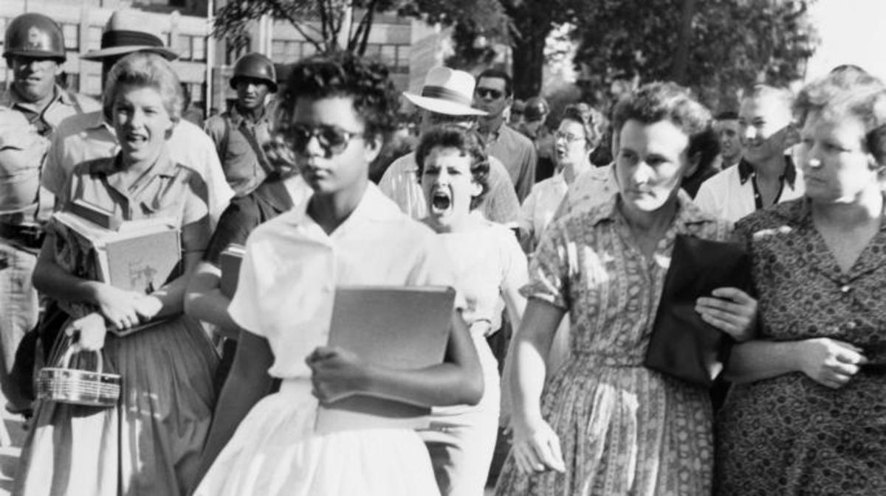

Brown vs Board of Education is a 1954 Supreme Court case that ruled that racial segregation of public school students was unconstitutional. Before this case, the US was ruling under the post Plessy v Ferguson law that legalized racial segregation in public facilities. This established the "seperate but equal" doctrine that made it legal to racially segregate spaces long as they were equal. Decades after this, the NAACP challenged the "seperate but equal" law with numerous cases, one of them being Brown v Board of Ed.
In this case, a father named Oliver Brown sued the Board of Education of Topeka, Kansas in 1951 because his daughter, Linda Brown, was turned away from all-white elementary schools in their city. This suit was pivotal in challenging the "seperate but equal" doctrine because in his suit, Brown claimed that the schools for all black children were not equal to the ones for all white children. Thus, violating the 14th Amendment which states that no state should "deny any person within its jurisdiction the equal protection of the laws".
Little Rock Nine
After the law to racially desegregate schools was passed, in 1957 a group of nine black students were selected by the NAACP to integrate Central High School in Little Rock, Arkansas. Of the nine, the most recognizable student would be Elizabeth Eckford. On the day the group walked to Central High School, Eckford was actually seperated from her peers and went to the school from a different entrance. As she was walking, an angry mob made of white adults and some youth were yelling at and jeering Eckford. Despite this, Eckford kept walking towards the school with shades on looking completely unfazed. This historical act was captured on film and is one of the most notable pictures of the Civil Rights Movement era.
Elizabeth Eckford walking past angry mob of white people to the Central High School entrance (1957)
The outrage over racial intergration in schools wasn't just from angry whites on the outside, but also from their children in the school. According to Elizabeth Jacoway's report on the Little Rock Crisis, one of the nine members, Melba Pattillo Beals and Vice Principal J.O Powell wrote about the horrors that went on behind school doors. Black students were often bullied and victims to physical assaults by the hands of racist students. There was also an escalating pattern of intimidation towards school board members, school personnel and students who supported integration. Things got so hostile that the Little Rock school board had to file suit requesting a "cooling-off period". The school board made the case that the educational standards set by the district could not be preserved in such an environment. The Supreme Court later ruled against the school board's case.
One of concerns with integration posed by the Little Rock school board was accommodating to the newley enrolled Black students in the previously all white schools. As Brown v Board of Ed highlighted, the curriculum in all Black schools were not the same as all white schools, thus justifying that seperate was not equal. This brings into question what kind of teachers were teaching these children and what methods were they using to ensure the Black students were receiving equally sufficient education. This was something that had a lot to do with Black teachers and the opportunities they recieved, if any, to teach Black youth.